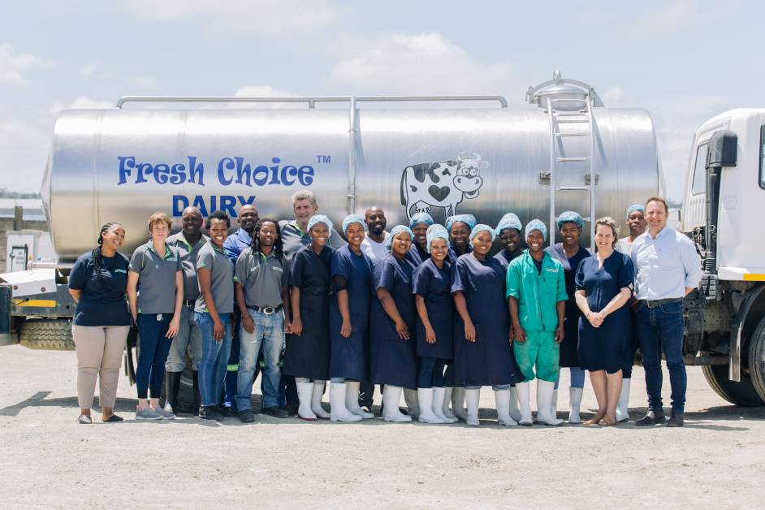
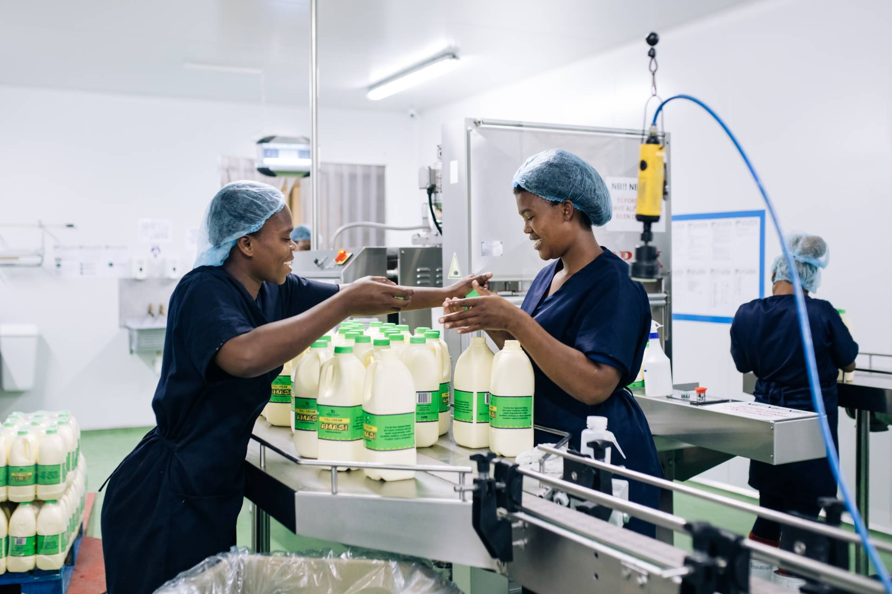

About us
Fresh choice is a local, family owned dairy, established in 2010 and now operationg
from the Cave Rock costal area of East London.

Our History...
Fresh Choice was established in 2010 by a Aiden Sansom.
It started as a roadside farm stall supplying the rural communities of Chalumna and Good Hope.
The 'Containers', as the roadside farm stall became known, have become 'somewhat' of a landmark
on the R72 between the two Kayer's Beach roads and are still used today as a distributuion hub
for products sold into the rural communities - either for private consumption, or part of school feeding schemes.

How we operate...
Our milk is sourced from local dairies and distributed throughout the Boarder Region of the Eastern Cape - From Port Alfred to Grahamstown, Bedford, Queenstown to Elliot, Qumbu, Toslo, Mthatha, to the coast, and back to East London. All our products are made with milk that is Full Cream and Hormone free - this gives it a distinctive smooth taste.
Fresh Choice Premium Quality Diary